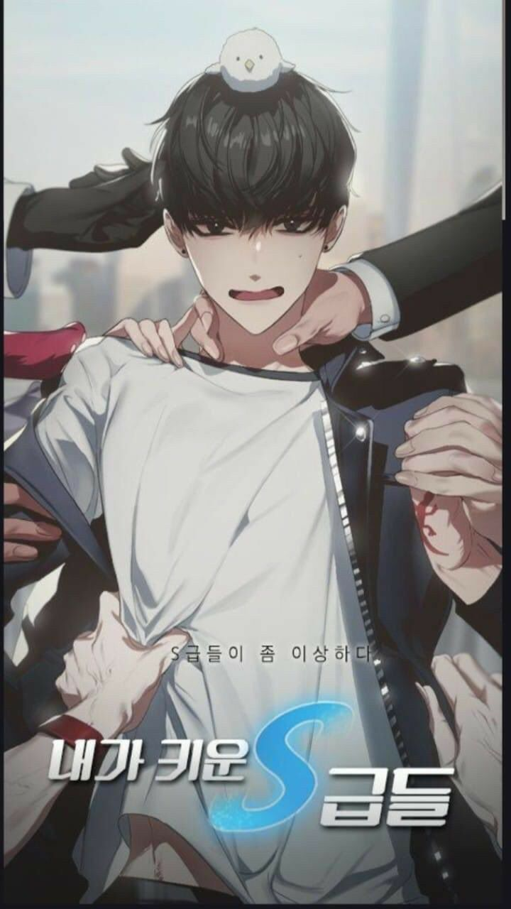

S classes that i raised
Thể loại: Phiêu lưu, Kỳ ảo
Mô tả:
Một Thợ săn cấp F. Và hơn thế nữa còn là một người anh trai cấp F chẳng thể nào nối gót được cậu em trai hạng S tuyệt vời của mình. Sau khi sống một cuộc sống nát bét đến từng mảnh và thậm chí còn hủy hoại luôn cuộc đời của em trai mình, tôi đã có một cơ hội nữa: Hồi quy về năm năm trước. Tôi đã chọn ra giải pháp cho mình. Lần này, thay vì mắc lại những lỗi lầm đó, tôi sẽ yên lặng mà nhàn nhã hưởng thụ cuộc đời. Đấy là những gì tôi nghĩ.... nhưng tất cả các cấp S cứ kì quặc kiểu gì ấy... và dường như vì một số lí do mà tôi chẳng thể thoát khỏi họ được?
Tóm tắt cốt truyện:
Tóm tắt Những Rank Cấp S Tôi Nuôi Dưỡng (The S-Classes That I Raised) Câu chuyện xoay quanh Han Yoojin, một người thức tỉnh hạng thấp, yếu và gần như vô dụng trong thế giới đầy quái vật và thợ săn. Sau khi chết một cách thảm hại vì cố gắng bảo vệ em trai mình, Yoojin quay ngược thời gian về quá khứ. Khác với những truyện hồi quy thông thường, Yoojin không trở nên mạnh mẽ. Thay vào đó, anh nhận được một kỹ năng đặc biệt: khả năng “nuôi dưỡng” và tối ưu tiềm năng của những người có tư chất Rank S. Nói cách khác, Yoojin là một “supporter/manager” thiên tài, không phải chiến binh.
Bình luận
Vui lòng đăng nhập để bình luận.